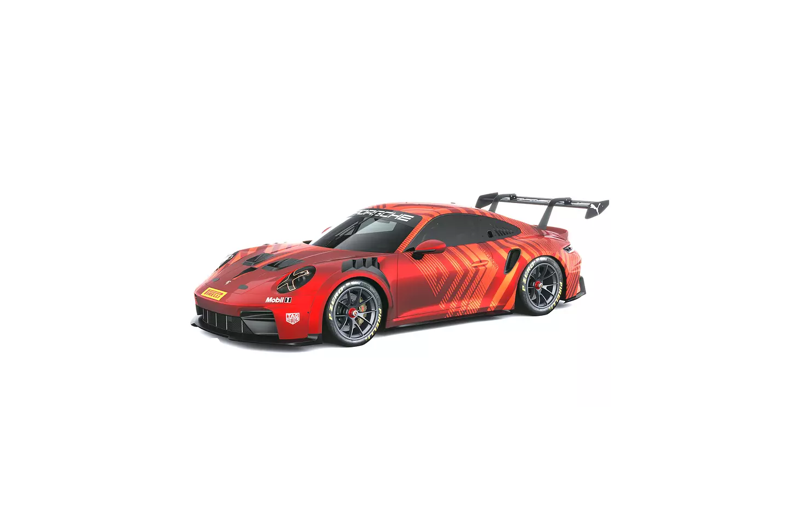
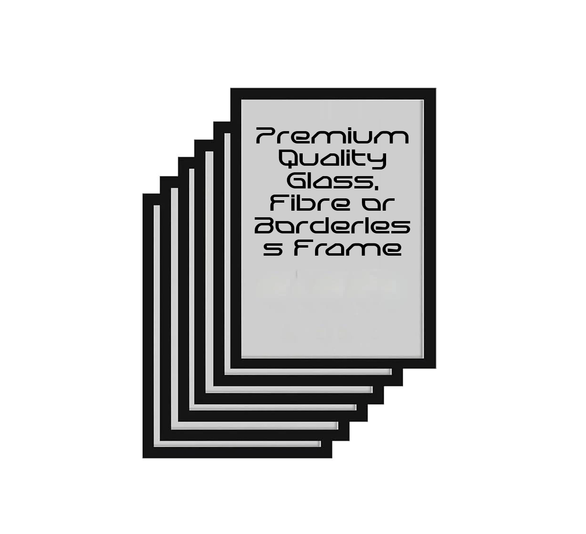
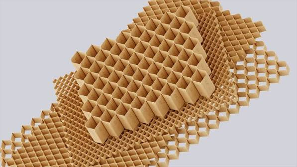

Premium Poster Prints
Crisp poster prints are selected for rich color, sharp detail, and a polished look across automotive, F1, MotoGP, anime, and custom designs.
Product Finishes & Craftsmanship
At Prism Frames, every 3D figure, premium poster, and framed display is created with selected materials for clean finish, lasting beauty, and display-ready presence.
Crisp poster prints are selected for rich color, sharp detail, and a polished look across automotive, F1, MotoGP, anime, and custom designs.

Vehicle figures are checked for body shape, surface detail, color balance, and display impact before they are packed.

F1 cars, MotoGP bikes, race liveries, circuits, and team-inspired visuals are prepared with attention to the details fans care about.

Frames, backing, and mounting choices are matched to the poster size, room style, and final display requirement.

Finished products are checked, cleaned, and packed carefully so they are ready for gifting or display.
Each product is prepared with attention to detail, balance, and finish so the final display feels collectible, clean, and refined.